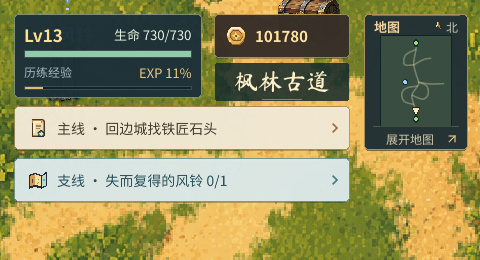
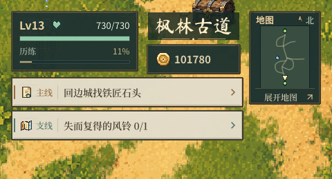
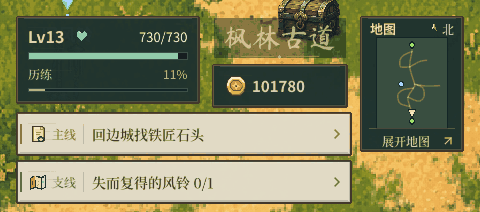
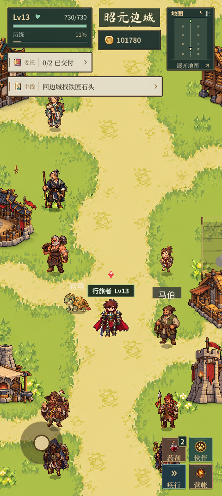
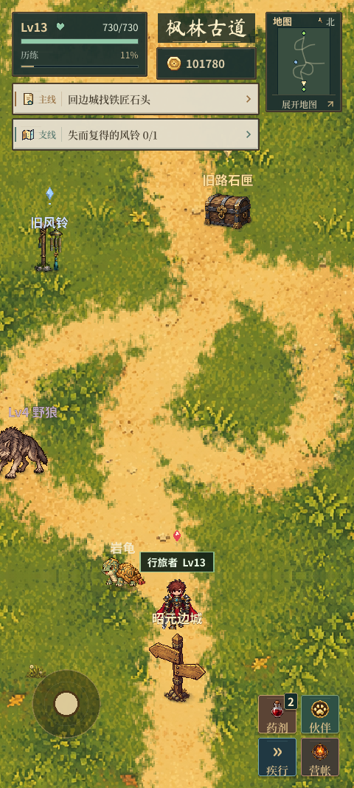

远征 · HUD 层级与材质
地点名成为上方视觉锚点；资源栏降低对比；深绿漆木、黄铜边缘与纸签统一组件语言。任务类型改为左侧小标签。以下图片均来自实际 Godot 游戏。
修改前

修改后

场景检查
书法标题、宋体正文、清晰数字采用固定口径；4px 网格对齐。生命去掉重复文字，资源和任务保留 44px 点击高度。金币变化、经验增加、任务更新和进入地点才触发相应微动效。
事件动效
实际游戏录制：进入地点、金币连续入账与支出、经验增加、任务更新。

长屏检查 · 480 × 1067
查看长屏实际截图


文字检查：352 个文字节点；未发现错误采样、过小艺术字或文字框高度不足。查看检查结果